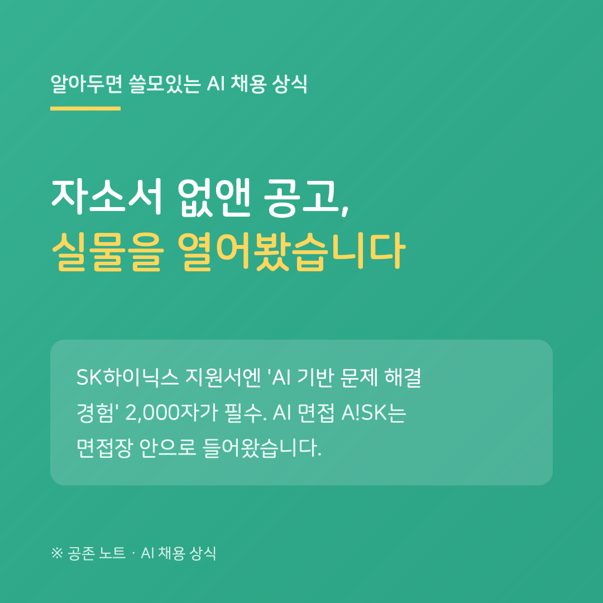

7월 말에 전해드린 SK하이닉스 신입 채용 개편이 8월 20일 실제 공고로 나왔습니다. 접수는 26일 오후 5시까지입니다. 보도와 실물이 같은지, 공고와 지원서 가이드를 직접 열어 확인했습니다.
자기소개서 칸은 정말 없습니다. 대신 「AI 기반 문제 해결 경험」 란이 필수 2,000자로 들어왔습니다. 가이드는 "AI를 활용해 실제 문제를 해결했던 경험"을 쓰라면서, 공모전 아이디어가 안 떠올라 ChatGPT로 주제를 정했다는 식의 단순 질의응답 경험은 지양하라고 예시까지 들어 둡니다.
AI 면접 'A!SK'도 그대로 있습니다. 다만 자리가 옮겨졌습니다. 상반기 공고에서는 온라인 검사 단계의 비대면 영상 인터뷰였는데, 이번에는 11월 '반나절 면접' 안의 네 번째 순서로, 면접장에 마련된 별도 공간에서 응시합니다.
눈에 띄는 건 AI 고지의 위치입니다. "AI는 서류와 면접에 쓰일 수 있으나 참고용이며, 최종 결정은 사람이 한다"는 문장은 공고의 영문 안내에만 있고, 한글 본문에는 없습니다. 어떤 AI 도구를 쓰는지는 양쪽 어디에도 없습니다.
구직자에게 확인할 것은 하나입니다. 전형 안내와 가이드 PDF를 끝까지 열어 보세요. 어떤 칸이 필수인지, AI가 어느 단계에 있는지는 보도가 아니라 그 파일에 적혀 있습니다.
---
※ SK Careers 공고(R261762)·지원서 입력 가이드(PDF)·상반기 공고(R260521) 원문 기준, 2026년 8월 22일 확인. AI 도구의 공급사는 공고에 기재되어 있지 않습니다.
공존 노트 · AI가 당신을 평가하는 시대, 구직자를 위한 안내서